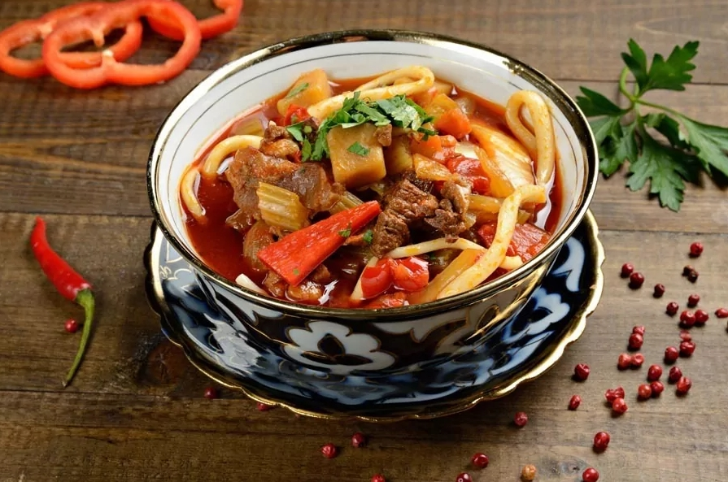

приготовление:
-
Заранее сварить бульон.
-
Поставить казан/кастрюлю с толстым дном на плиту на огонь, налить масла, чтобы покрывало дно. Порезать на кубики 500 гр. говядины и 1 большую луковицу на перья. Когда масло разогреется - положить туда мясо и лук. Пока зажарка готовится, можно заняться остальными овощами. Помыть, почистить и порезать длинненькими палочками 2 морковки, добавить сначала в зажарку 2 ст.л. томатной пасты, дать ей обжариться, и чуть позже и морковь. Добавить специи: 1 ч.л. перца, 1 ст.л. кумина, 2 ст.л красного перца (можно сладкой паприки) и 3 ч.л. соли, перемешать, дать чуть пожариться и залить всё 1 л. воды. Так же, как морковку, обработать репу/турнепс, картошку, перец, сельдерей, цукини, баклажан. По мере подготовки овощей и с учетом их времени приготовления отправлять овощи в кастрюлю: сначала репу, через минут 10 все остальное. После тушить еще 15 минут все вместе. Добавить порезанную мелко зелень, перемешать, пару минут потушить.
-
Для острого соуса лайжан: острый перец (штуки 3) почистить, отпавить в блендер, туда же 6 зубчиков чеснока и 0,5 ст.л. воды - измельчить в кашицу. Обжарить на сковороде с маслом, обильно посолить и добавить 2 ч.л. кориандра. В конце доюавить 3 ст.л уксуса. Дать остыть, переложить в баночку и можно долго хранить в холодильнике.
-
Лапшу разделить на порции, обвалять в масле оливковом. В кастрюлю налить воду, довести до кипения, добавить 2-3 ст.л соли - да, много. Порцию лапши отправить в кипяток, не давать ему опускаться на дно, варить столько, скольно написано в инструкции, примерно 2-3 минуты.
-
Собираем тарелки — лапша + овощная подлива + бульон + острый соус по усмотрению.